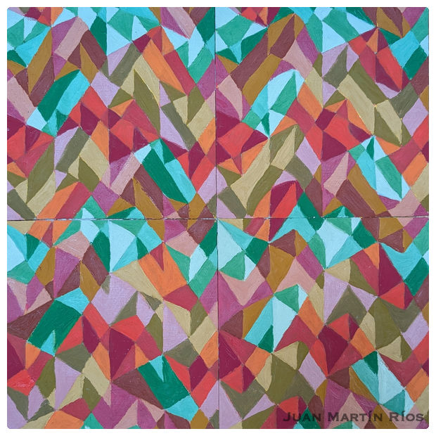
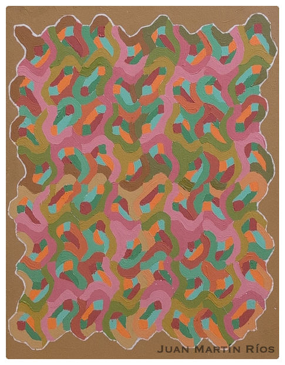
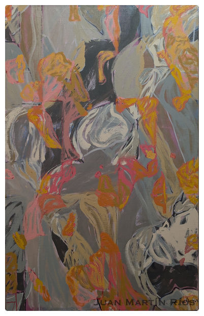
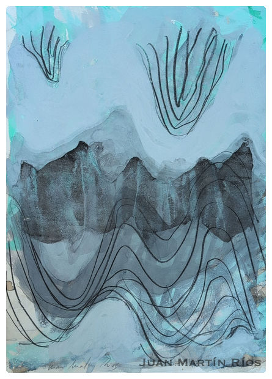
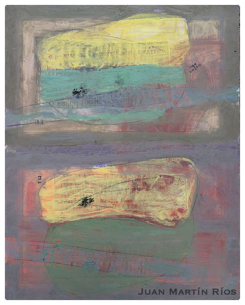
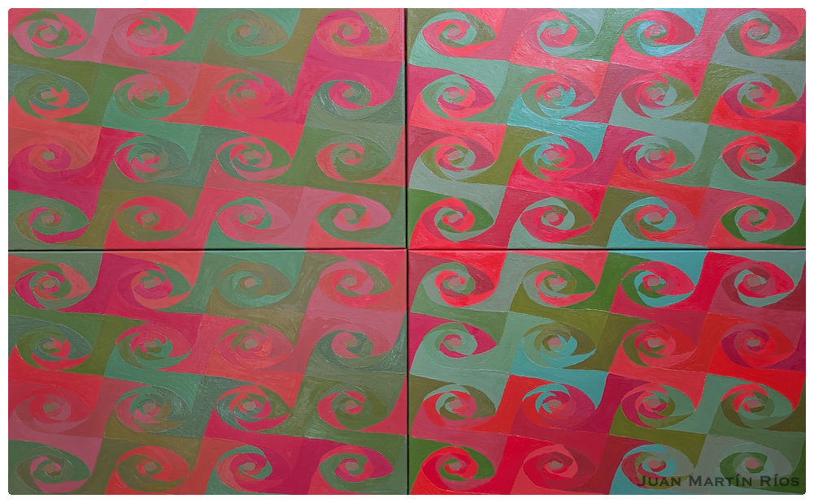

01
Obras seleccionadas
Óleo · Tinta · Collage





◆ ◆ ◆
«Las matemáticas son la llave abstracta que abre la cerradura del mundo físico.»John Polkinghorne — citado en “El Paisaje de la Llave”
02